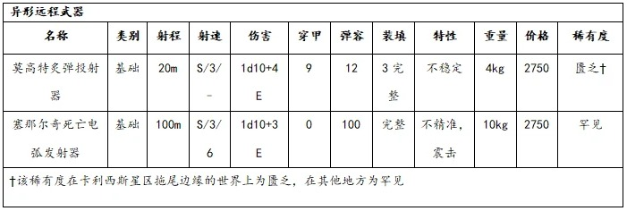

【译者：白日铸炉、卡利西斯秘会秘教徒、PhgFenix、石盾人】
“机器可以背叛你，但也可以拯救你的生命。不要相信它们，但要把它们提供的装备当作对你们使命的神圣认可。”
——审讯官桑德对麾下侍僧如是说
那些没有为暗影战争做好准备的人将自食恶果。那些在对抗异形或受诅之魂时非常有效的装备和武器，在更微妙的环境中可能会失效。那些可以悄悄塞进口袋或拥有特殊功能的武器，那些可以隐藏和伪装其性质的盔甲，以及那些专门的设备和药物，更适合在未经许可的审讯室中使用，而不是在巢都的街道和隧道中随意使用。
“不优雅的杀人武器就是纯纯的憎恶。”
——托拜亚斯·贝拉斯科
类别：基础（实体弹）
这种短小、野蛮的武器因其对神圣引擎的影响而被机械神教禁止使用，它发射大口径子弹，专门用来击败机仆和其他机械构造。弹药包含定向能量释放，可有效穿透机械装甲或机械镀层。但其射速慢、射程短，抵消了这种武器的实用性。
虽然对于事先知道防御性质的任务很有用，但对于更多样化的目标，它的作用有限。对于具有机械特性的目标，或者被 GM 判定为性质相似的物体（例如防爆门的门锁系统），紊乱步枪的穿透值翻倍。
类别：基础（实体弹）
当活捉猎物至关重要时，无法使用更复杂武器（如射网枪）的人会使用这种更简单但仍然有效的武器。它发射的是一根细精金缆绳末端的套索，可以套住目标并将其卷起。缆绳末端有一个快速释放装置，因此如果猎物过于难缠，也不会损失整件武器。
被这种武器击中后，被困的受害者会使用力量或敏捷进行对抗检定，以对抗发射者的力量，从而挣脱束缚。
| 名称 | 种类 | 射程 | 射速 | 伤害 | 穿透 | 弹容 | 装填 | 特殊 | 重量 | 花费 | 稀有度 |
|---|---|---|---|---|---|---|---|---|---|---|---|
| 紊乱步枪 | 基础 | 10m | 1/-/- | 1d10+3I | 2* | 6 | 1 完整 | - | 5kg | 400 | 罕见 |
| 套索枪 | 基础 | 30m | 1/-/- | —— | - | 1 | 1 完整 | 捕捉 | 3.5kg | 100 | 匮乏 |
“力量流淌自掌心与所握之物。即便要付出生命代价，此后再也无法侍奉神皇，你是否依然怀有勇气握住那神圣之物？”
——帕特・摩诺穆斯（Pater Monomus）于三角宫底层圣殿
灵能引擎是一种恐怖的武器，其设计将勉强受控的活体灵能者大脑置于武器壳体中，通过神经植入物的刺激驱动，最终以亚空间力量轰击敌人。赛璐玢灵能引擎主体呈菱形，通过柔性线缆连接一根约一米长、带绝缘层的引导枪。引擎中央是透明舱室，大小恰好容纳四枚悬浮在淡粉色凝胶中的灵能者大脑，脑上插满机械构件，由液管彼此相连。引擎窄边密布着灵能增幅器、虚无屏障与流体维持装置。这使得内部相连的大脑更加饱受折磨。
灵能者是可消耗的资源，这是帝国的真理。但头衔名为灵能贤者的技术异端们却做得太过了：他们进行禁忌的基因操作；使用神经激活植入物以诱导/控制灵能的施展；并且截留本该上缴帝国什一税的灵能者。大贤者赛璐玢试图在自己的灵能者资源中剔除麻烦的人类成分，由此她于 M41.583 年被圣锤修会部队焚灭。她的教派培育着大量插满器械、不断脉动着的灵能者大脑，所有血肉皆被剔除，脑中意识被改造成可控的盲目疯癫。赛璐玢并非这一邪恶技艺的创始者，但现在这一技术以她为名。如今其他技术异端仍在践行此法，收割灵能者的活脑，将其投入永无光明的恐怖与疯狂之中。
由一名配备灵能溢散防护的战士手持引导枪，一名机仆或可消耗的仆役背负灵能引擎主体。
当战士启动引擎进行攻击时，内部疯癫的灵能者会被强制驱动，以攻击引导枪所指向的最近目标（注：灵能引擎无需弹药，也无需装填）。
使用者启动灵能引擎时，投骰 D100 对应以下效果表：
| 投骰 | 效果 |
|---|---|
| 01–03 | 灵能引擎因负荷炸裂，内部受刑的大脑在灵能尖啸中彻底死亡。投骰 3 次灵能现象表。† |
| 04–06 | 一枚舱内灵能者大脑痛苦死亡，其防护虚无屏障烧毁。后续所有伤害-1d10。若此情况第二次发生，灵能引擎彻底报废。投骰 1 次灵能现象表。† |
| 07–09 | 引导枪失效：灵能引擎 10 米内所有生物与机械被巫火吞噬，受到 2d10+5 能量伤害。投骰 1 次灵能现象表。† |
| 10–15 | 虚无屏障与驱动植入物在运作中颤抖，灵能引擎发动失败。投骰 1 次灵能现象表。† |
| 16–20 | 疯狂的灵能者大脑攻击折磨它们的机械，但被虚无屏障压制。灵能引擎启动失败。 |
| 21–30 | 单一目标遭受 3d10+10 能量伤害，引导枪劈出亚空间闪电。投骰 1 次灵能现象表。† |
| 31–40 | 目标周围 10 米球形范围内所有事物被巫火吞噬，受到 2d10+5 能量伤害。投骰 1 次灵能现象表。† |
| 41–70 | 单一目标遭受 3d10+10 能量伤害，引导枪劈出亚空间闪电。 |
| 71+ | 目标周围 10 米球形范围内所有事物被巫火吞噬，受到 2d10+5 能量伤害。 |
† 灵能现象表的效果施加于距离灵能引擎最近的人，通常是背负它的仆役，而非内部的灵能者大脑。那些大脑，它们的苦难不会如此轻易地结束。
灵能引擎会对灵魂与心智构成持续威胁，除非将其存放于静滞力场、星语厅的重型灵能屏障或类似设施之中。引擎内灵能者那盲目的疯狂会不断穿透虚无屏障，100 米内的所有人都会受到影响——表现为半隐半现的低语、转瞬即逝的恐怖幻象、虚幻的痛感与诡异的冲动与欲望。在无防护的灵能引擎 100 米内停留数小时，必须进行一次挑战难度（+0）意志检定——失败则获得 1 点失心点 与 1 点堕落点。只要灵能引擎仍在附近且无防护，该判定每日重复一次。
存在多种危险且未经深入研究的灵能引擎强化方式，例如：
表 5-8：黑暗技术武器（远程部分）
| 名称 | 种类 | 射程 | 伤害 | 穿甲 | 特殊 | 重量 | 花费 | 稀有度 |
|---|---|---|---|---|---|---|---|---|
| 赛璐玢灵能引擎 | 基本 | 100m | 特殊 | 0 | - | 15kg | 41000 | 罕见 |
这种体型小巧、外观粗暴的多管枪械深受在费代大星云（Fydae Great Cloud）附近活动的人类变节者和海盗的喜爱。因其强大的制动力，莫高特炙弹投射器在登船行动以及对付兽人和虚空潜伏者等危险的异形时表现出色。这种武器使用的是一种帝国和异形技术的恶劣混合体，归属于一个被称为莫高特（Morgauth）的小异形种族。拾荒的爬行种莫高特并不以精巧的手艺著称，它们打造的武器也不例外，其快速发射的自推进热能弹对目标的影响也是如此。
炙弹投射器的弹药在发现该武器的地方为“匮乏”品质，基础价格为每发 10 王座币。
人们对生活在星区北部边缘的塞那尔奇族知之甚少，帝国几乎没有试图与它们接触过。帝国所研究的塞那尔奇技术主要集中在电气武器上，这些武器使用的电容器和电池的技术含量远远超出了机械神教的水平。塞那尔奇死亡电弧发射器是一种步枪大小的强力武器，使用者能向敌人发射一连串的弧形闪电。如果其中任何一道致命的闪电击中目标，发射器就会沿其轨迹射出一道威力更大的电弧，将目标炸成碎片。
任何击中同一目标的额外射击都会合并为一次伤害掷骰，因此坚韧和护甲值的影响只会被考虑一次，而不是每次射击一次。
举例：
一名侍僧用全自动发射死亡电弧发射器，对单个目标造成三次命中。在计算目标的坚韧和护甲减免时只掷骰一次，并不是分别掷骰三次 1d10+3，而是掷骰一次 3d10+9。

“很抱歉这必须由你来承担，你拥有如此美好的未来，但我肩负着更崇高的使命。只有牺牲你，才能达成这个使命。”
——赛拉弗对阐释官伯恩所说的话
这种武器的原始样本是用空心、带刺的纺锤刺藤叶制成的，里面装满了这种植物的毒液，用于对抗天敌。虽然一些“纯粹主义者”坚持使用传统方法种植这种武器，但用现代材料制成的类似武器在许多教派和刺客组织中很受欢迎。刀片的扁平侧面有数百个细孔，可使内部物质扩散到造成的任何伤口中。
任何被纺锤刺藤刃击中并损伤至少一点承伤的部位，都会被“注入”一定剂量的使用者灌注进刀身中空处的物质。然而，由于其传递系统的无差别性，击中任何部位都会从刀身上释放出一定剂量的物质，而不仅仅是造成承伤损伤的攻击。
底巢佬和不道德的执法者经常把这种手套称为“穷人的动力拳套”。其简陋版本看起来很像一条镶满电源线的铠甲，而先进的设计看起来并不比厚重的手套更突兀。它们在斗殴或其他情况下可能会造成毁灭性的打击，而对手可能直到为时已晚才意识到它们的存在。手套可以在不违反常规规则的情况下，通过徒手攻击产生震击属性的效果，但也可以在接触到受害者皮肤时随时放电，例如擒拿没有护甲的对手或在正式场合表现。
震击手套的体积和外观与其品质直接相关。以下属性是常规工艺修饰的补充：
粗糙：体积庞大，布满了能量电缆，这些做工粗糙的护手具有笨重的属性，任何试图掩盖其真实本质的行为都会受到-20 的惩罚
普通：这些护手的外观类似于动力装甲拳套，前臂上有明显的电线。
优秀：它们甚至不如强化甲壳甲全套笨重，几乎可以当作普通盔甲。穿戴者试图隐藏武器用途时，可获得+10 的额外奖励。
极品：只有大师级工匠才有能力制作这些艺术品。它们看起来像纤维或皮革制品，甚至可以在上层巢都当作时髦的衣服。穿戴者试图隐藏这些手套的用途时，可获得+20 的额外奖励。
在大师的手中，不起眼的绞索可以像爆矢枪一样致命，但对于需要活捉目标的人来说，这种武器还有另一个好处。由于使用这种武器需要近距离接触，因此咏死者拜死教将其视为传授给成员的最后一项也是最亲密的武术。
使用绞索的所有攻击都算作对头部的精准射击，因此命中时受到-20 的惩罚。成功命中后的后续攻击，无论造成多少伤害，都会获得+30 的奖励。如果武器在击穿护甲后对目标造成伤害，攻击者可以造成正常伤害，也可以造成伤害数值一半（向上取整）的虚弱等级。虚弱规则可在《黑暗异端》核心规则英文版第 200 页找到
| 名称 | 种类 | 射程 | 伤害 | 穿透 | 特殊 | 重量 | 花费 | 稀有度 |
|---|---|---|---|---|---|---|---|---|
| 绞索 | 格斗 | - | 1d10R | 0 | 柔韧，原始 | 0.5kg | 200 | 匮乏 |
| 藤刃 | 格斗 | - | 1d10-1R | 0 | 原始 | 0.5kg | 75 | 匮乏 |
| 震击手套 | 格斗 | - | 1d5E | 0 | 震击 | 1.0kg | 100 | 匮乏 |
“‘四岔分裂’根本不是个正经词。直接杀了了事。”
——武装修士 格雷辛（Adept-militant Gresyne）
叛道矩阵是 M41 的 8 世纪，由昂布拉·玛琉格利斯麾下的技术异端所制造的无数亵渎造物之一。他们将神经增强学识和万机神万物法则两方面的研究玷污、扭曲、结合，从而创造出这一邪恶技术。这种矩阵能够以秘术能量摧残心智与灵魂，摧毁人们信仰与忠诚的根基。
在塔瑞辛净化（Cleansing of Tarycine）后，异端审判庭的侍僧们回收了叛教矩阵。叛教矩阵被嵌入电击杖之中。每根金属杖体都布满了凸起的沉思结点、电子传感器与斑驳的力场投射装置。颇具讽刺意味的是，杖身刻满了以正统机械祷文书写的祈祷词——即便堕入最邪恶的技术异端罪行，许多玛琉格利斯信徒仍承认其神圣性。
哪怕只是被电击杖轻轻擦过，受害者都会被其力量烙下创伤。叛道矩阵会直抵灵魂深层的运行机制，向信仰的根基灌注痛楚与毒性，灼痛的电流尖刺会焚毁有关信仰的记忆。瞬发的物理痛苦已极为可怖，但真正的恐怖在于：杖中的矩阵会让对神皇的信仰之花就此枯萎、凋亡。
一些激进派审判官将叛教矩阵作为强力工具用于作审讯室，他们乐于用这大敌的造物去拷问堕落的异端灵魂。如果忠诚的帝国公民会在折磨中堕入叛教；同理，即便是混沌邪神最坚定的信徒，在矩阵作用下也会陷入胡言乱语的绝望。卡利西斯密会中的伊斯塔万派则怀有更野心的目标：重现玛琉格利斯信徒在巢都世界 虔诚（hive world of Piety）发动的叛教之瘟（Plague of Apostasy），即，使用巨大的矩阵装置将无信与疯狂注入空气。伊斯塔万派秘会正通过研究电击杖探索这项高阶技术其中的秘密线索。
仁慈的杀戮：
使用者可以选择不造成伤害，且不触发电击杖的震击特性，但叛教能量效果依然生效。
叛教能量：
即便只是叛教矩阵的轻轻触碰，也会蹂躏目标的灵魂与其坚定的信念。受害者每被触碰一次，都必须进行一次恐惧（4）检定，并承受所有常规后果，包括失败需按照震惊表掷骰。纯净信仰、信仰坚定等带缓解效果的天赋对此恐惧检定正常生效。
因矩阵影响的受害者会精神失常，其表现为对一切重要信仰的逐渐丧失，如：宗教信仰、挚爱之人、内心坚守的信念。对帝国公民而言，最痛苦的是失去与神皇的联结。当叛教矩阵攫住公民的灵魂，受害者会感到帝皇变得遥远虚无，祈祷沦为空洞词句，国教成为虚假外壳。这种绝望足以令人彻底崩溃。
被称为至高天技师（Empyric Engineers）的机械教技术异端派系因使用大量以亚空间力量对付亚空间自身的装置而闻名，他们会用这些装置消灭干扰他们研究的恶魔。其中最古老、最受尊崇的装置便是天穹导能刃，对于这些异端机械教信徒来说也是神圣的象征。一柄精金单刃导能刃是每位技师圣所的核心圣物：刃身嵌有黄金制成的力场导轨，刃柄为亚空间器械，并且刃根处插槽设有小型虚无场发生器。
技师们的隐秘要塞中设立着巨型亚空间器械用于抽取至高天精华并将其禁锢在虚无场容器中以供研究。他们也能制造尺寸小得多的虚无场发生器装在导能刃上。这些发生器像镶嵌着电路的璀璨宝石，但暗藏着致命危险，虚无发生器内部封存着狂乱无序的原始亚空间物质。如果一把导能刃没有这份被囚禁的至高天能量，那它只不过是一件象征物罢了。
特殊规则：
至高天释放：命中目标时，使用者可选择释放虚无场发生器中的能量，让亚空间物质经由导能刃涌入目标体内。额外造成 1d10 能量伤害；或者对拥有恶魔特性的目标则额外造成 2d10+5 能量伤害。无论物理护甲还是恶魔坚韧均无法减免该伤害。非恶魔目标会获得 2d10 堕落点与 2d10 失心点，并立即变异：以严重变异表掷骰 1 次，次级变异表掷骰 1 次。导能刃持有者获得 1d5 堕落点。25 米内所有生物必须进行一次恐惧 (2) 检定，因为从刃身与受害者身上爆发出短暂的亚空间尖啸幻象。
一枚小型虚无场发生器内的亚空间物质足以支持 1d10 次至高天释放。虚无场发生器为罕见物品，价值 17000 王座币，重量 1kg。
表 5-8：黑暗技术武器（近战部分）
| 名称 | 种类 | 射程 | 伤害 | 穿甲 | 特殊 | 重量 | 花费 | 稀有度 |
|---|---|---|---|---|---|---|---|---|
| 判教矩阵 | 近战 | - | 1d10 I | 0 | 平衡 | 4kg | 30000 | 罕见 |
| 至高天导能刃 | 近战 | - | 1d10 R | 2 | 平衡 | 4kg | 45000 | 罕见 |
对于痴迷于异形工艺品的人来说，以太长矛是一件美轮美奂、备受爱好者追捧的艺术品。制成两米长的矛杆的材料是奇异的蓝灰色合金，却看不出经人手加工的痕迹，仿佛它天生就长成这副模样，末端是一束在淡淡的薄雾中闪烁的雾刃。尽管它明显出自异形之手，但对于最纯洁派以外的人来说，这把武器看起来既神秘又诱人。然而，另一些人对它的渴望并不是因为它的美丽，而是因为它能像烟雾一样穿过任何物质，杀人而不留痕。
一些异形学学者认为，以太长矛的创造者是灵族，但也有人声称灵族认为这种武器及其同类是一种诅咒，因此无法容忍它的存在。在审讯中，一些冷贸易代理人承认他们是从一个名为“斯崔克西斯（Stryxis）”的异形种族那里购买了这种武器。然而，根据攘外修会的官方记录，在卡利西斯星区并没有这个种族活动的迹象。
以太长矛没有实体的矛尖几乎可以穿过任何物质（包括肉体）而不留下任何痕迹。因此，敌人很难抵挡它的攻击，试图抵挡者会受到-10 减值。该武器还无视护甲、坚韧值和灵能防御，而且使用者无法将自己的力量加值加到武器的伤害上。以太长矛似乎能伤及生物的实质。
然而，以太长矛不会伤害到非生物物品、机器或任何具有“恶魔”或“机械”特性(5+)的生物。此外，如果以太长矛的枪刃接触到抗咒装置、不可接触者或类似的灵能空白区域（如包括星舰的盖勒立场在内的其他装置），它的矛尖就会在一阵闪烁之后消失不见。该武器会在 1d10 天内处于失效状态。
痛苦手套是一种在被称为德拉特里人的邪恶异形中非常流行的装置，因为它所带来的痛苦与武器的杀伤力远远不成比例。痛苦手套通常以鞭子或带刺手套的形式出现，也有更奇特的形式，如可以容纳受害者的手的小玻璃盒，或插入受害者的脊柱或头骨中的针状探测器。一旦接触到受害者，痛苦手套就会连接到他的神经系统，控制它并使其与受害者自己的身体对抗，使受害者承受不同程度的疼痛。在最紧急的情况下，痛苦手套还可以作为一种简单而有效的武器，在近战中迅速使对手动弹不得。这种武器在激进派审判官中很受欢迎，因为对他们来说，获取信息的权宜之计比审问后囚犯的状况更为重要。
痛苦手套可以根据属性表作为武器使用，也可以作为审讯的一部分。使用痛苦手套作为审讯的一部分需要进行一次困难（-20）的禁忌知识（异形）检定。每获得一点成功度，受试者每回合都会受到 1 点无视护甲或坚韧的伤害。单个轮次中每造成 1 点伤害，针对受害者的任何审讯检定都会获得+10 加值。
怒爪刃是一把外形狰狞的利刃，就像是把某种野兽的利爪做成了匕首一般。在战斗中，使用者可以通过怒爪刃柄上的一个凹槽，为它的刀刃注入一层薄薄的酸液或毒液。斯基泰族将怒爪刃作为献祭仪式的一部分，在深深刺入目标的同时，刀刃上的毒液会确保受害者处于极乐或剧痛的状态。
怒爪刃最多可以储存五剂任何一种毒素或药物。除了刀刃造成的正常伤害外，受害者还会受到刀上的毒液或药物的影响，就像是被生生注射进体内一样。
“凡刃皆可砺。”
——朗德谚语
商业家族的首席军械师可以将两种武器组合成一种致命的武器，从而为任何战斗风格提供定制组合。尽管这些精心制作的武器价格昂贵且难以获得，但它们往往会成为传家宝。
任何基础武器都可以在其框架上添加第二把基础等级武器，从而形成组合武器。射击者可以选择使用其中任何一种武器进行攻击，但不能同时使用两种武器。除了弹药价值减半（四舍五入）和成本翻倍之外，所有次要武器的特性保持不变。
如果使用《审判官手册》第 245 页的“制作”规则（https://www.bilibili.com/opus/736045046957080615），则这是一项难度为困难（-10）的工作，持续时间为几周。如果侍僧不拥有“生计（军械师）”技能，则此类制品的价格是武器成本总和的两倍，且已考虑“制造”带来的任何修正。
（注：组合武器后续在《扬升》更新，建议使用后者）
“最好的盔甲是不被看见。”
——古泰拉谚语
这种铠甲通常只由拉斯的追击士护教军和精英审判庭特工使用，它结合了轻型甲壳甲的最佳特性与卡梅莱林技术的伪装效果。然而，它只能抵御视觉探测，因此不适合高级隐身需求。
穿戴者将获得与卡梅莱林斗篷相同的效果，躲藏检定+20，如果静止不动，在远程攻击下，射手与你的距离会增加一个射程等级。
虽然视觉屏蔽可以迷惑哨兵和简单的扫描，但通常情况下，热成像仪可以凭借自身体温识别出你。遮蔽套衣使用一罐液态冷却剂，通过毛细管循环到服装外部，使穿戴者的热信号与环境保持一致。由于需要此类装备的人通常处于危险之中，因此它还配有防弹布面板，覆盖大部分重要区域。
当生物的红外传感器以热源为基础进行视觉检测时，遮蔽套衣可为躲藏检定提供+20 的额外加成。
一些异形学家称模糊力场为“对艾达灵族全息力场的拙劣模仿”——通常是在他们被审判庭突击队逮捕之前。事实上，为了模仿其他技术，机械神教创造了一种独特的效果。这种效果不是隐藏，而是扭曲使用者的轮廓，使其难以被聚焦或识别。这种力场的额外好处是它对电子系统也有类似的效果，可以挫败那些依赖模式识别的系统。
力场发生器需要标准电池才能运行，并采用复杂的布线网络，当被撕裂或刺破时可能会对使用者造成伤害。当激活时，这套盔甲会对所有基于视觉的检定造成-10 的惩罚，包括远程和近战攻击。然而，如果穿戴者受到任何穿透盔甲的伤害，则攻击伤害值增加 2。激活或关闭护盾需要部分，电池可持续 2 分钟（24 回合）。
辛提拉法务部的精英防暴小队“白手”成员穿着这种坚固的盔甲，它们在装甲板上集成了震击场，近距离攻击他们的人会遭到意想不到的打击。席贝柳斯巢都的底巢人称这种盔甲为“火花板甲”，有时会用纸屑包裹双手来抵御其影响。
任何导电武器（任何非木质、非陶瓷或非玻璃材质的近战武器）成功击中震击甲壳甲后，都会触发坚韧检定，就像攻击者的手臂被具有“震击”属性的武器击中一样。
| 护甲名称 | 保护位置 | AP | 重量 | 花费 | 稀有度 |
|---|---|---|---|---|---|
| 卡梅莱林战斗护甲 | 头，躯干，手臂，腿 | 5 | 17kg | 1000 | 罕见 |
| 遮蔽套衣 | 躯干，手臂，腿 | 2 | 6kg | 650 | 稀有 |
| 模糊服 | 头，躯干，手臂，腿 | 2 | 7kg | 750 | 稀有 |
| 震击甲壳甲 | 躯干，手臂，腿 | 6 | 19kg | 5000 | 罕见 |
当这套独特的护甲在莫吕斯（Molus）的废墟中被人们发现时，它在攘外修会引发了许多争论：究竟这套护甲本身就是某种异形，还是某种寄生虫，抑或只是异形创造者使用的某种装置？
梅克罗涅德护甲看上去就像一滩液态金属，会对外部刺激产生反应，但可以抵抗鸟卜仪的扫描。当它接触到人类的皮肤时，会在皮肤表面凝聚成形，变成造型类似于盔甲的保护壳。这种触感冰凉的金属在受到攻击时会瞬间变得超级致密，使撞击或能量爆炸在其表面发生偏转。不过，梅克罗涅德护甲也有它的缺陷。只要穿戴者保持清醒，该护甲就能起到很好的防护作用。不过，一旦穿戴者失去知觉，这寄生虫般的东西就会试图钻进穿戴者的肉体，要么把他整个吞掉，要么从体内控制他的行动，直至找到新的宿主。无论它以哪种方式反抗穿戴者，对穿戴者来说都是致命的。
如果梅克罗涅德护甲的穿戴者失去知觉，他必须立刻进行一次意志检定。检定失败表示该护甲试图蠕动进他的体内，以每轮 1d10 点无视护甲值或坚韧加值的伤害的速度使他逐渐窒息。穿戴者因此死亡则表示该护甲已经彻底掌控他的躯壳，粗暴地操纵他的肢体去完成它自己的使命，通常是追杀另一个不知情的目标。
卡利西斯星区对这种先进的灵族设计几乎一无所知，现存的全息护甲的数量寥寥无几，大部分都掌握在攘外修会的高级官员手里。这套护甲融入了灵族的巨型战争机械和神秘的丑角剧团相同的能量场，在运动时能将穿戴者的身影碎裂成无数色彩斑斓的碎片。
在移动过程中，护甲生成的全息立场会分散穿戴者的注意力，虽然穿戴者受到的所有攻击都会受到-30 减值，但穿戴者在进行感知或警觉检定来辨别全息场内的任何事物时，也会受到-30 减值，包括那些基于鸟卜仪读数或类似装备的检定。不过，任何察觉到使用者或侦测到立场外部情况的感知检定都会获得+10 加值。
全息护甲无法通过正常途径购买，因此游戏主持人应该把获取它们的任何尝试本身作为一次冒险或活动。
这种涂层模仿使用者周围的颜色，就像同名斗篷一样，但被整合到装甲表面中。使用卡梅莱林涂层对装甲进行升级需要一名拥有生计（军械师）技能的熟练工匠，并额外花费 1000 个王座币的费用。效果就像使用者穿着变色龙斗篷一样。
工匠可以为一套盔甲添加细密的冷却毛细管和必要的循环系统。这项挑战性的任务需要具备生计（军械师）技能的工匠，并额外花费 500 个王座币。最终效果与上文的遮蔽套衣相同。
与大多数其他附加物相比，这种复杂结节网络会导致个人图像失真和模糊，很难辨认出他们的轮廓或特征，因此很难整合到盔甲中。添加此修改的人必须拥有生计（军械师）+10，并且会额外花费 1000 个王座币。游戏效果与上文的模糊服中描述的效果相同，包括穿透攻击的额外伤害。
由于需要坚固的基底才能正常运作，此改装只能添加到 AP 值等于或大于 4 的装甲上。此改装还需要一名至少拥有生计（军械师）+10 技能的熟练工匠，并额外花费 2000 个王座币的价格。结果与上文的震击甲壳甲条目中描述的结果相同。
“让我目光所及之处，无远弗届。 /令无处可避吾视。”
——星区领主马里乌斯·哈克斯的秘密宣言
| 名称 | 重量 | 花费 | 稀有度 |
|---|---|---|---|
| 隐私立场 | 10kg | 1250 | 稀有 |
| 升线器 | 1kg | 100 | 匮乏 |
| 蜘蛛沉淀 | 1kg | 150 | 匮乏 |
| 腮过滤器 | 0.5kg | 100 | 匮乏 |
| 全息面罩 | 0.5kg | 250 | 稀有 |
| 音阵追踪器 | 6kg | 450 | 匮乏 |
| 入侵机魂 | 0.5kg | 500 | 罕见 |
| 追踪装置 | 0.5kg | 200 | 匮乏 |
| 收音虫 | n/a | 500 | 稀有 |
| 摄像飞虫 | n/a | 1000 | 稀有 |
机械神教生物贤者在斯佩托里斯的水世界工作时开发了这些呼吸面罩，供在地下加工设施中工作的人员使用。这些面罩使用人工鳃系统，允许使用者从水中过滤氧气。这些过滤器有些脆弱，需要经常浸入水中，以免变干和退化。
虽然红点激光瞄准器对于提高射击精度非常有用，但对于秘密行动来说，它太显眼了。全息面罩结合了激光瞄准器，后者经过调整，发射不可见的激光束。瞄准点会显示在头盔面罩上，但不会暴露自己的意图。尽管名字里有“头盔”二字，但该系统并不需要头盔。然而，在大多数卡利西斯人看来，单独佩戴面罩会显得相当突兀和不寻常。